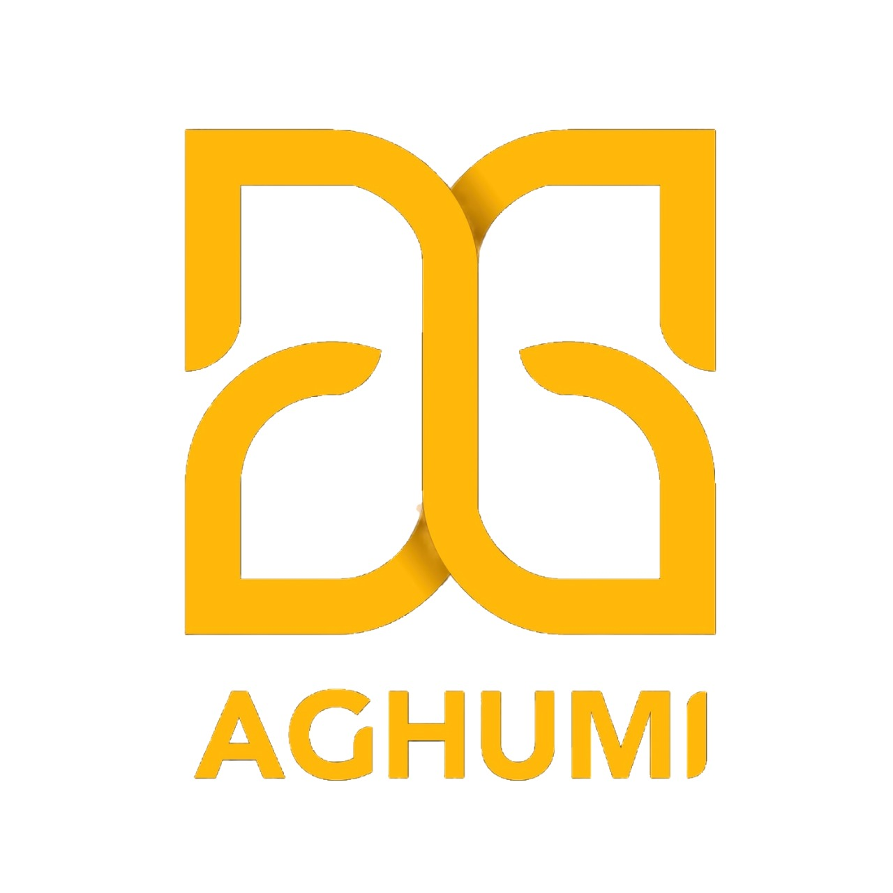

13 Jun 2026
Beranda Pustaka Resmi Dibuka
Pameran buku dan aktivasi ruang perpustakaan mulai menyapa pengunjung.

PKB XLVIII 2026 · Festival Seni Bali Jani VIII
Program literasi yang menjadikan perpustakaan sebagai ruang publik yang kreatif, inklusif, dan partisipatif melalui pameran buku, diskusi, peluncuran buku, dan kolaborasi komunitas literasi.
13 Jun – 25 Jul
Berlangsung 2026
6
Ragam rangkaian acara
Gratis
Terbuka untuk semua usia
Tentang Kami
Beranda Pustaka diselenggarakan oleh Dinas Kebudayaan Provinsi Bali bersama Komunitas Aghumi sebagai pengampu program, menghadirkan kembali perpustakaan sebagai ruang publik yang kreatif, inklusif, dan partisipatif lewat semangat Atma Kerthi.
13 Jun 2026
Pameran buku dan aktivasi ruang perpustakaan mulai menyapa pengunjung.
Agenda · Diskusi
Berbagi proses kreatif dari ide hingga naskah jadi.
Agenda · Peluncuran
Ruang temu penulis, penerbit, dan pegiat literasi.
Tentang Kami
Program literasi bagian dari Pesta Kesenian Bali XLVIII dan Festival Seni Bali Jani VIII.
Beranda Pustaka adalah program literasi yang diselenggarakan oleh Dinas Kebudayaan Provinsi Bali sebagai bagian dari rangkaian Pesta Kesenian Bali XLVIII dan Festival Seni Bali Jani VIII, dengan semangat Atma Kerthi. Program ini hadir untuk memperluas akses literasi sekaligus mengaktivasi perpustakaan sebagai ruang publik yang kreatif, inklusif, dan partisipatif.
Dalam pelaksanaannya, Dinas Kebudayaan Provinsi Bali berkolaborasi dengan Komunitas Aghumi sebagai koordinator program yang menjembatani keterlibatan penerbit, penulis, komunitas literasi, dan masyarakat luas. Buku tidak hanya ditampilkan sebagai objek baca, tetapi juga sebagai medium dialog, pembelajaran, dan titik temu antara pengetahuan, seni, dan kebudayaan.
Melalui pameran buku, diskusi, lokakarya, peluncuran buku, hingga pertunjukan, Beranda Pustaka membuka ruang dialog antargenerasi dan lintas disiplin.
13 Jun
Mulai kegiatan
25 Jul
Berakhir 2026
Gratis
Untuk semua usia
Penyelenggara
Dinas Kebudayaan Provinsi Bali, berkolaborasi dengan Komunitas Aghumi sebagai pengampu program.
Tujuan Kegiatan
Target Sasaran
Pelajar & mahasiswa
Mengembangkan minat baca, kreativitas, dan keterlibatan dalam kegiatan literasi interaktif.
Guru & tenaga pendidik
Fasilitator yang membangun budaya literasi lewat pendekatan pembelajaran kontekstual.
Penulis, ilustrator & pegiat buku
Bagian dari ekosistem literasi yang mendukung keberagaman bacaan.
Masyarakat umum
Peserta dan penggerak aktivitas literasi, sosial, dan ekonomi kreatif berbasis komunitas.
Jadwal Kegiatan
11 – 25 Juli 2026, pukul 10.00 – 20.00 WITA, di Gedung Perpustakaan Widya Kusuma.
Kegiatan Reguler · Tersedia Setiap Hari
Berlangsung tiap hari, 10.00–20.00 Wita, di Perpustakaan — tidak diulang lagi di jadwal harian di bawah.
Jadwal Harian · Program Tambahan
Tidak ada kegiatan yang cocok. Coba ubah kata kunci atau kategori.
Kabar & Blog
Dokumentasi dan catatan dari rangkaian kegiatan di Beranda Pustaka.
13 Jun 2026 · Pembukaan
Program literasi bagian dari Festival Seni Bali Jani VIII ini mulai menyapa pengunjung dan aktivasi ruang perpustakaan.
Lihat Selengkapnya →Koordinat baca
Koordinat baca ini menjadi tempat memperoleh informasi tentang Beranda Pustaka dan pemberian voucher souvenir setiap Rp 100.000 pembelanjaan.
Lihat Selengkapnya →Pameran Kartun
Selain membaca buku, kita juga bisa membaca diri bersama tarot reader di Beranda Pustaka.
Lihat Selengkapnya →Pengampu
Komunitas Seni Pertunjukan
Aghumi merupakan komunitas seni pertunjukan yang berbasis di Bali dan telah berkarya sejak tahun 2018. Berangkat dari keyakinan bahwa seni mampu menjadi ruang perjumpaan dan pemulihan, Aghumi mengeksplorasi tarot sebagai bahasa artistik untuk membangun refleksi, membuka dialog, serta menghadirkan pengalaman kolektif melalui berbagai karya pertunjukan.
Dalam setiap proses kreatifnya, Aghumi memadukan teater, sastra, musik, riset, dan praktik partisipatoris untuk menciptakan karya yang tidak hanya dipentaskan, tetapi juga mengajak audiens merasakan, mempertanyakan, dan menemukan makna bersama. Seni dipandang sebagai medium penyembuhan, ruang berpikir kritis, sekaligus wadah untuk menyuarakan pengalaman-pengalaman yang sering kali berada di pinggiran.
Sejak berdiri, Aghumi telah menghadirkan berbagai pertunjukan dan kolaborasi bersama komunitas, institusi budaya, serta festival seni nasional seperti Festival Seni Bali Jani, Indonesia Bertutur, Bali Spirit Festival, hingga Ubud Writers & Readers Festival. Melalui setiap karya dan kolaborasi, Aghumi terus berkomitmen menjadikan seni sebagai ruang empati, edukasi, dan transformasi sosial.

Komunitas Seni Pertunjukan
Lokasi & Kontak
Gedung Perpustakaan Widya Kusuma berada di dalam kompleks Taman Werdhi Budaya (Art Centre) Denpasar — tepat di belakang Kalangan Ayodya, panggung tempat berlangsungnya pementasan Pesta Kesenian Bali. Dari gerbang masuk Art Centre, jalan terus sampai melihat Kalangan Ayodya (diatas pura di sebelah utara pintu keluar), lewati jembatan dan gedung perpustakaan ada persis di belakangnya.
Panduan Rute